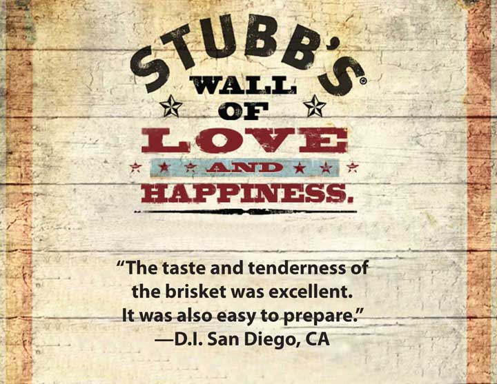

You are about to graduate and move to another city to start a new job. Your employer is paying for your moving expenses, so you go online to see what people have to say about the different moving companies. One company has particularly good reviews so you hire it. Yet what actually happens is vastly different—and a complete disaster. Little surprise, then, when you later discover that the company actually paid people to post those positive reviews!
Unfortunately, such an experience has happened so often that the Federal Trade Commission (FTC) is now considering rewriting rules regarding endorsements and whether companies need to announce their sponsorships of messages.
Once upon a time, before the days of the Internet, any form of selling under another guise or a phony front was called suggingAny form of selling under another guise or under a phony front. (a word created from the first letters of selling under the guise, or SUG). The term was primarily applied to a practice in which a salesperson would pretend to be doing marketing research by interviewing a consumer, and then turn the consumer’s answers into reasons to buy. More recently, some companies have hired young, good-looking, outgoing men and women to hang out in bars and surreptitiously promote a particular brand of alcohol or cigarettes. Sugging seems to be a good term to apply to fake reviews, as well.
Figure 14.10
This customer comment, posted on http://www.StubbsBBQ.com, is really from a customer. If it weren’t, Stubb’s would be lying, yet we expect companies to post true statements if they are positive. More difficult to trust are anonymous reviews; we assume they come from real customers, but that is not always true. And when they aren’t from real customers, the company is guilty of sugging.
Truly, in no other marketplace should the term caveat emptor apply as strongly as it does on the Internet. Caveat emptor means, “let the buyer beware,” or “it’s your own fault if you buy it and it doesn’t work!” Product reviews can be posted by anyone—even by a company or its competitors. So how do you know which ones to trust? Oftentimes you don’t. Yet many of us do trust them. One study found that over 60 percent of buyers look for online reviews for their most important purchases, including over 45 percent of senior citizens.Jack Neff, “Spate of Recalls Boost Potency of User Reviews,” Advertising Age 78, no. 43 (2007): 3–4.
Figure 14.11
Most of us know that you can’t believe everything a salesperson says about a product in a setting like this. But what about online? Whom can you believe? It’s caveat emptor, or let the buyer beware, there, too!
Source: Wikimedia Commons.
While sugging isn’t illegal, it isn’t fair. Not only is the content potentially misrepresented, but the source certainly is. As you already know, a marketer cannot make promises about an offering’s capabilities unless those capabilities are true. Sugging is similar—it involves misrepresenting or lying about the source of the information in an effort to gain an unfair advantage.
The consequences of being caught while sugging can be high. Even if the information posted was actually an accurate depiction of the offering’s capabilities and benefits, consumers will be less likely to believe it—or any of the other the company’s marketing communications, for that matter. The loss of trust makes building any kind of lasting relationship with a buyer extremely difficult to do.
So far, there are no regulations regarding sugging, although that may change if the FTC decides a crackdown is needed. There are, however, regulations affecting how one uses e-mail to sell.
Specifically, the CAN-SPAM ActA law that prohibits the use of e-mail, fax, and other technology to randomly send messages to potential consumers. prohibits the use of e-mail, faxes, and other technology to randomly push a message to a potential consumer. SpamAny unwanted commercial e-mail similar to junk mail. is a term for unwanted commercial e-mail similar to junk mail. Using e-mail and other forms of technology to sell is legal if the seller and the buyer have a preexisting relationship or if the buyer has given his or her permission.
Permission marketing is a term that was created to suggest that marketers should always ask for permission to sell or to offer buyers marketing messages. The idea was that when permission is granted, the buyer is willing to listen. Now, however, anything “free” online requires that you sign up and give “permission,” not just to get the freebie but also all kinds of future spam and annoying messages. You might also inadvertently give a seller permission or allow it sell your name and contact information. When you sign up for contests or agree to the seller’s privacy statement when you order something online, you may have given them permission to resell your contact information to one of their “partners.”
Because of trust issues and the overuse of permission marketing, many consumers create dump accountsAn e-mail account that is used for registering when buying products online in order to ignore spam and other junk e-mail later., or e-mail addresses they use whenever they need to register for something online. The dump account is used only for this purpose, so that all spam goes to that account and not the person’s personal account. Many consumers find it easier to use dump accounts rather than read every privacy policy and try to remember which vendors won’t sell the e-mail addresses to their “partners” for marketing purposes. Therefore, when you are a marketing manager, don’t expect all the e-mail addresses you collect from a free offer to be valid.
In the B2B world, when attendees sign up for a trade show, they often give the show’s exhibitors permission to send them e-mails and other information. Most sellers won’t send marketing communication to fax machines because they are often shared by a number of people, and there is no guarantee that the intended person will receive the fax. Using e-mail, however, is acceptable because the buyer gave permission.
U.S. privacy lawsLaws that limit the amount and type of information a company can collect about a consumer and also specify how that information can be used or shared. apply to both Internet marketing and other forms of commerce. The laws limit the amount and type of information a company can collect about a consumer and also specify how that information can be used or shared. In the EU, the types of data a company can collect are fewer, and the sharing of information is far more restricted. For example, a company cannot share information about customers in one division with another division. (Sending out unsolicited e-mails to potential buyers is also restricted in Europe.)
The Gramm-Leach-Bliley ActA legal act that requires certain institutions to provide written notice of their privacy policies. of 1999 requires financial institutions to provide written notice of their privacy policies. Privacy policiesStatements about how a company will use and protect a consumer’s private data. are statements regarding how a company will use and protect a consumer’s private data. The law was broadened in 2003 to apply to a wider array of companies and consumer information.
The FTC requires a company to follow its policy or face severe penalties, even if the company is not required by the Gramm-Leach-Bliley Act to have a privacy policy. So, if you own a bookstore and you have a privacy policy, even though the law doesn’t require you to have one, you have to follow the FTC’s rules. And if you decide to change your privacy policy (for example, you decide to sell your customer list to Amazon), you have to notify your customers of the new policy.
For an example of a privacy policy, take a look at Amazon’s. You can find it at http://www.amazon.com/gp/help/customer/display.html?ie=UTF8&nodeId=468496 or just go to http://www.amazon.com and click on the “Privacy Notice” link at the bottom of their page.
What kind of data do companies want on you? They want to know where you live so they can apply data about your neighborhood to know you better and create marketing messages more likely to persuade you to buy something. They want to know how much you make to see if you can afford a higher-priced product. They want to know about the other things you buy, because that will likely affect what you buy in the future. If you own a boat, for example, you’re more likely to buy fishing gear in the future. If you buy fishing gear, you’re more likely to buy clothes from Columbia. And so on. The more they know, the more they can create offers tailored to fit your lifestyle and to entice you to buy.
Figure 14.13
Your university may know a lot about you, including your health history, your financial situation, and even the car you drive—not just the make and model, but the specific car. The Gramm-Leach-Bliley Act requires your school to protect that data so your privacy is protected.
Source: Wikimedia Commons.
Some organizations also have data, such as your social security number, that criminals could use to steal your identity. For example, think about how much information your university has on you. They not only have your social security number, but they may also have your financial information (through financial aid), your health information (through the campus health center), and your vehicle information (through parking fees). Protecting that information so you aren’t harmed is a huge responsibility for the university.
Privacy policies and privacy laws apply to both business customers and individual consumers. As we explained in Chapter 8 "Using Marketing Channels to Create Value for Customers", many business buyers require vendors to sign nondisclosure agreements (NDAs) that specify what information is proprietary, or owned by the customer, and how, if at all, the seller can use that information. NDAs are not an online tool specifically but are often used in the normal course of business.
What about the offering itself? When you buy something online, you don’t get to see it first, so how do you know it is what the seller says it is, and what can you do if it isn’t? The Uniform Commercial Code (UCC)A group of laws that govern commercial practices in the United States. (first mentioned in Chapter 13 "Professional Selling") is a group of laws that govern commercial practices in the United States. The UCC defines many aspects of sales, such as when a sale actually takes place and what warranties buyers can expect.
A warrantyA promise or assurance by a seller that an offering will perform as the seller represented it would. is a promise by the seller that an offering will perform as the seller said it would. The UCC makes a distinction between two types of warranties. The first is an expressed warrantyAn oral or written statement by the seller regarding how a product should perform and the remedies available to the consumer in the event of its failure., which is an oral or written statement by the seller regarding how the product should perform and the remedies available to the consumer in the event the offering fails.
An implied warrantyAn obligation for a seller to provide an offering of at least average quality, beyond any written statements. is an obligation for the seller to provide an offering of at least average quality, beyond any written statements. For example, when you buy a new car, there is an implied warranty that it will run as promised after you drive it off the lot. You also have the right to expect average quality for any characteristic of a product that you buy online, except for those characteristics specifically described in the online material. If you were able to inspect the product before you bought it, such as looking at it in a store, the implied warranty only applies to those aspects you couldn’t inspect or observe in the store.
Where the law gets tricky is when it comes to other forms of writing. Marketing messages, whether written in a brochure or advertisement or stated by a salesperson, are considered implied warranties. Any written statement about what the offering does has to be true, or it violates the UCC’s definition of an implied warranty (and is therefore punishable by law).
Keep in mind that a salesperson can create an implied warranty in an e-mail or during an online chat session if he or she makes a promise. Even if the salesperson says something that contradicts a company’s written material elsewhere, the consumer has the right to believe what the salesperson says. As such, the salesperson promise is legally binding.
As marketer, you have an obligation to protect your company from consumers who might not have honest intentions. For example, have you noticed how you sometimes have to reproduce a strange-looking set of letters or words before you are allowed to make a purchase when buying something online? That simple step prevents automatic ordering by bots. A botShort for robot; a kind of program that perform automatic functions online., which is short for robot, is a kind of program that performs automatic functions online. One of those functions could be to purchase products, such as tickets to a highly desirable sporting event, that the buyer can then resell at a higher price. Or a bot could be used to obtain many units of a freebie that someone can then resell. Bots can be used for many illicit purposes; a good marketer anticipates their uses and creates barriers to prevent being taken advantage of.
A legal tool to help protect your company is the Digital Millennium Copyright Act. This act is designed to prevent copyrighted material from being pirated online. While prominent cases involve downloading music, your marketing information is also included. When you find a good way to market your offerings online, a competitor can’t just steal your communications and insert their name. You are protected by this act.
What is very difficult to protect against is phishingSoliciting personal information in order to steal an identity and use it to generate cash fraudulently., or soliciting personal information in order to steal an identity and use it to generate cash fraudulently. However, you may find it reassuring to your customers to remind them of your privacy policies and your customer contact practices. For example, a bank may remind its customers that it will never ask for a social security number by e-mail. Making sure your customer contact policies protect your customers can also help protect them against phishing from someone pretending to be you or your company.
Sugging is selling under any phony type of front. It includes posting fake reviews about products online. Sugging damages a seller’s trust among buyers and should never be done. U.S. laws govern how products can be marketed, both those that are sold electronically and through more traditional channels. Companies must have permission before they can send you spam, and they have to tell you how they will gather and use your personal information. Warranties—expressed and implied—are binding no matter how companies deliver them. Good marketers anticipate less-than-honest activities by individuals and take steps to prevent them. Bots are online robots that some people use to take advantage of marketers.